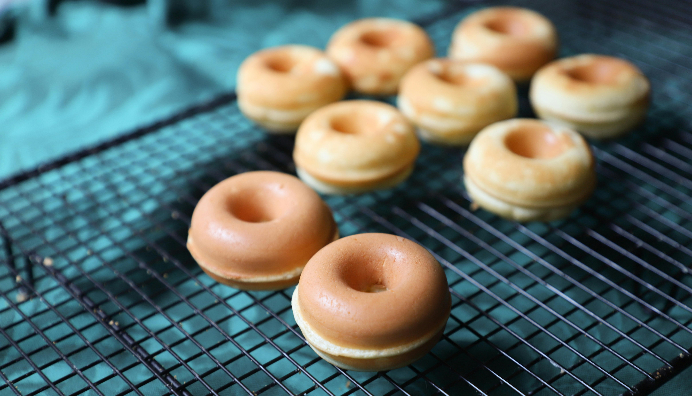

Donut Recipe
Back to Home

This is a simple recipe for making delicious homemade
donuts. These donuts are soft, fluffy, and perfect for any occasion. Whether
you prefer them glazed, powdered, or filled with your favorite jam, this
recipe will satisfy your sweet tooth.
Ingredients
- ⅜ cup milk
- 2 tablespoons white vinegar
- ½ cup white sugar
- 2 tablespoons shortening
- 1 large egg
- ½ teaspoon vanilla extract
- 2 cups sifted all-purpose flour
- ½ teaspoon baking soda
- ¼ teaspoon salt
- 1 quart oil for deep frying
- ½ cup confectioners' sugar for dusting
Instructions
- Gather all ingredients.
-
Stir together milk and vinegar; let stand for a few minutes until thick.
-
Cream together sugar and shortening in a mixing bowl until smooth.
- Beat in egg and vanilla until well-blended.
- Beat in egg and vanilla until well-blended.
- Roll dough out on a floured surface to 1/3-inch thickness.
-
Cut into donuts using a donut cutter. Let stand for about 10 minutes.
-
Heat oil in a large, deep skillet to 375 degrees F (190 degrees C). Fry
donuts in hot oil in batches until golden, turning over once, about 1 to
2 minutes per side.
- Drain on paper towels.
- Dust with confectioners' sugar before serving.